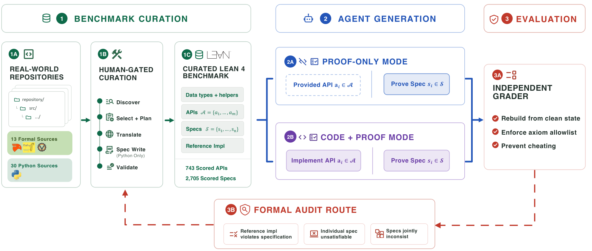

Introduces Vero, a repository-level benchmark of 43 multi-module Lean 4 projects for evaluating AI agents on joint implementation and proof synthesis.
Abstract
AI agents are increasingly used for programming, but do not provide any guarantee on the correctness of generated code. Verified code generation, in which an agent produces both an implementation and a machine-checked proof of its specification, offers a stronger path toward trustworthy AI-generated software. Existing benchmarks in this direction either focus on individual functions or only evaluate proof generation with provided implementations. It is still an open question whether agents can make coherent implementation and proof choices across real multi-module codebases. To bridge this gap, we introduce Vero, the first benchmark to evaluate joint implementation and proof synthesis at the repository level. Vero contains 43 multi-module instances sourced from real-world repositories spanning Python, Dafny, Verus, and Coq, and covering diverse domains from cryptographic protocols to distributed systems. Each instance consists of a multi-module Lean 4 repository with predetermined API interfaces, manually curated formal specifications, and reference implementations, supporting both proof-only and code-and-proof evaluation modes. To improve benchmark reliability, Vero also includes an audit mechanism where agents are allowed to formally prove unsatisfiability of provided specification or incorrectness of reference code, which surfaces and corrects latent code and specification errors during curation. We evaluate frontier coding-agent configurations with Lean toolchain access. The strongest agent fully solves only 27 of 43 instances and closes no specifications on the hardest repositories. Vero provides a concrete testbed for measuring progress toward repository-scale verified software synthesis, where current agents still fall short. We release the benchmark, curation pipeline, and evaluation harness at https://github.com/sunblaze-ucb/vero.
Problem
AI coding agents provide no correctness guarantees, and existing verified-code-generation benchmarks target only individual functions or proof generation with fixed implementations. It is open whether agents can make coherent implementation and proof choices across real multi-module codebases.
Approach
Vero provides 43 multi-module Lean 4 benchmark instances curated from real-world repositories in Python, Dafny, Verus, and Coq. Each instance has fixed data-type definitions, API signatures, manually curated formal specifications, and reference implementations, supporting proof-only and code-and-proof evaluation modes. Agents run with full Lean toolchain access, and a formal audit mechanism lets agents prove specification unsatisfiability or reference-code incorrectness to surface defects during curation. Frontier coding agents (Codex with GPT-5.5, Claude Code with Opus/Sonnet) are evaluated by full-solve counts.

Figure 1: Vero’s end-to-end construction and evaluation workflow. Human-gated curation converts real-world Python and formal-language repositories into Lean 4 benchmark instances with fixed definitions, API signatures, specifications, and reference implementations. Agents are evaluated in proof-only or code-and-proof mode and scored by an independent grader, while the formal audit route returns ma
Results
The strongest configuration (GPT-5.5 xhigh) fully solves only 27 of 43 instances in code-and-proof mode, and 10 instances resist every configuration in both modes. Agents pass over 80% of individual specifications yet fail to build reusable lemma libraries and keep repositories consistent.
Agent
Mode
Full
$/full solve
GPT-5.5 (xhigh)
code+proof
27
$106
GPT-5.5 (xhigh)
proof only
25
$119
Claude Opus 4.8
proof only
10
$228
Claude Opus 4.8
code+proof
8
$248
GPT-5.5 (medium)
proof only
6
$182
Total cost, full solves, and per-spec metrics by agent and mode.